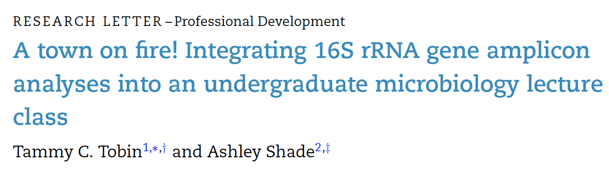
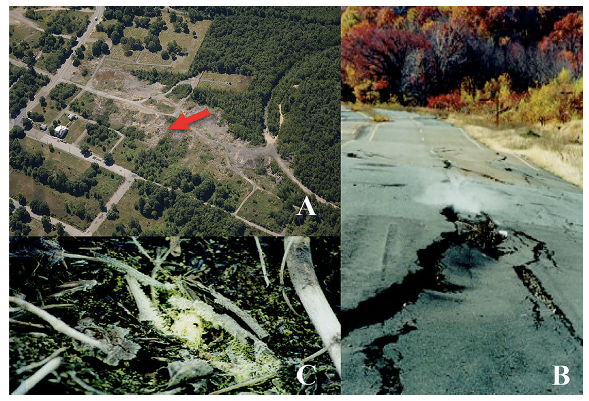

Introduction
This work flow was developed using data from: Tobin & Shade (2018). A town on fire! Integrating 16S rRNA gene amplicon analyses into an undergraduate microbiology lecture class. FEMS.

Working through this tutorial
This tutorial is built to help us explore how microbial communities are impacted by extreme environments.
You do not need to know R to use this tutorial and we will work through the first half in class, together.
This tutorial provides opportunities to run example code and to practice coding exercises. By the end of the tutorial you will:
have conducted an analysis of soil microbial communities!
gain an introduction to coding and using bioinformatic packages in R!
Quizzes As always, quizzes should be used after class to check your understanding of the course material. These, and the tutorials, will be available throughout the quarter.
The Data
What might we want to know about the data?
What is the data that we’re looking at? Where does it come from? Who collected it? What questions motivated this research?
What else might you want to know?
Sequencing data
Over the last few weeks, we’ve dug into how researchers have figured out how to extract DNA from microbes from various environments. We talked about collecting microbes from the ocean, soils, and even the atmosphere!
We then discussed how a particular method –16S rRNA gene Illumina sequencing– enabled scientists to sequence and amplify a particular segment of microbial DNA that enables us to explore WHO the microbes are in these samples, and their relative abundance.
The Samples
Today, we’re going to explore a set of samples that were collected by researchers from XXX at the site of the Centralia mine-fire.
Number of samples: 3 [S1, S2, and S3] Method of extraction: MoBio Powersoil kit Primers used: 8F
Check out the Fig. 1 and think about where you might have collected the samples from:

Fig. 1: The Centralia, Pennsylvania, mine fire has dramatically impacted the surface environment. (A) Aerial view of the Centralia Mine Fire in July, 2007. Bare ground indicates mine fire-affected sites. The location from which soil samples were collected is indicated by the arrow. (B) Land collapses have caused route 61 in Centralia to crack and buckle, while steam filled with combustion products can be seen rising from the fire below. (C) Elemental sulfur crystals that precipitate at the surface support sulfur-cycling bacteria.
How do environmental conditions vary across the samples?
Run the following code and discuss how the environmental conditions vary across the 3 samples:
The following code assigns the fils table_1.csv that is located in a directory for this tutorial to tab_1.
tab_1 <- read_csv(here("table_1.csv"))Practice: How do you visualize the table that you just created? Input code below and click ‘Run Code’ to visualize the table. To receive a hint, click ‘Hint’
Soil Tempearture is measured in degrees Celsius (˚C), while Total sulfur, sulfate, ammonium, and nitrate are all measured in mg/g.
tab_1Check your understanding
The following questions are to check your understanding of the material we cover in class. These should be completed after class and will be available throughout the quarter (along with the tutorials).
Constructing a Hypothesis
Maybe add a table of microbes that shows things we would have previously talked about: e.g. temperature requirements / metabolism so that students can build a hypothsis at this stage about what microbes they might find in each sample.
Preparing the Data
Creating A Phyloseq Object
To start testing our hypotheses, we need to get the data into a format that will enable us to visualize who the microbes are in each of the samples.
To do this, we need to create what is called a phyloseq object. This is a large file that combines our pre-loaded data tables that include:
- Information about our samples:
sampleinfo - The number of sequences per OTU in each of our samples:
count - And a taxonomy file that tells us what taxonomy each of our OTUs belongs to:
taxa
By combining these into a single phyloseq object, we’ll be able to explore our data through a package called phyloseq.
In the following code, I’ve turned our data tables into phyloseq components that we’ll combine into an object in the next step.
OTU = otu_table(count, taxa_are_rows=TRUE)
TAX = tax_table(taxa)
SAM = sample_data(sampleinfo)
# Combine OTU, TAX, and SAM into a phyloseq object called physeq:
physeq = phyloseq(OTU, TAX, SAM)Visualizations
Now that we’ve checked out the data, developed a set of hypotheses, and wrangled our data into a useable format, we can start to explore!
Where this goes depends on what data I can get my hands on
Distribution of Read Counts
As a first analysis, let’s look at the distribution of read counts from our samples.
Run the following code:
# make a data frame with a column for the read counts of each sample
sample_sum_df <- data.frame(sum = sample_sums(physeq))
# Histograph of sample read counts
ggplot(sample_sum_df, aes(x = sum)) +
geom_histogram(color = "black", fill = "red", binwidth = 2500) +
ggtitle("Distribution of sample sequencing depth") +
xlab("Read counts") +
theme(axis.title.y = element_blank())Chat about what you see in the histograph - are sequences evenly distributed across samples? Or do some samples have very few sequences, and others quite a lot? What might this mean for our downstream analyses?
Summary of the number of reads per sample
The following code calculates the mean (smean) and max (smax) number of reads per sample:
smean <- mean(sample_sums(physeq))
smax <- max(sample_sums(physeq))Practice: How would you alter the following code to find the minimum number of reads per sample:
smin <- sample_sumssmin <- min(sample_sums())Barplot
Plot barplot –> then have students think about how similar/dissimilar samples are based on microbe community –>then use living room analogy to think about what nMDS might look like.
“For transforming abundance values by an arbitrary R function, phyloseq includes the transform_sample_counts function. It takes as arguments a phyloseq-object and an R function, and returns a phyloseq-object in which the abundance values have been transformed, sample-wise, according to the transformations specified by the function. For example, the following command transforms GP.chl abundance counts to fractional abundance.”
# First, need to convert our sequence counts to a proportion so that we're looking at relative abundance
physeq.prop <- transform_sample_counts(physeq, function(otu) otu/sum(otu))
# Plot simple stacked barplot of top 20 most abundant taxa at phylum level
theme_set(theme_bw())
top20 <- names(sort(taxa_sums(physeq.prop), decreasing=TRUE))[1:20]
ps.top20 <- prune_taxa(top20, physeq.prop)
plot_bar(ps.top20)Next, add color to your barplot using fill to show the number of OTUs that belong to each Kingdom in the samples:
plot_bar(ps.top20, fill="Kingdom")What do you notice? Do all sequences belong to the same Kingdom? Does this make sense? Why or why not?
Now, keep the same fill color, and group the samples together by the sample type variable. This would be the XXX from which the sample was taken and sequenced.
plot_bar(ps.top20, fill="Kingdom", x="sample_type")Next, try using facet_wrap to organize the samples by experiment:
plot_bar(ps.top20, x="sample_type", fill="Kingdom") + facet_wrap(~exp, scales="fixed")Practice: change the following code to plot sequence abundance by Class:
plot_bar(ps.top20, x="sample_type", fill="Kingdom") + facet_wrap(~exp, scales="fixed")
plot_bar(ps.top20, x="sample_type", fill="Class") + facet_wrap(~exp, scales="fixed")Check out gradethis
Barplot helpful tutorial: https://joey711.github.io/phyloseq/plot_bar-examples.html
Exercise
Here’s a simple exercise with an empty code chunk provided for entering the answer.
Write the R code required to add two plus two:
Exercise with Code
Here’s an exercise with some prepopulated code as well as exercise.lines = 5 to provide a bit more initial room to work.
Now write a function that adds any two numbers and then call it:
add <- function() {
}Topic 2
Exercise with Hint
Here’s an exercise where the chunk is pre-evaulated via the exercise.eval option (so the user can see the default output we’d like them to customize). We also add a “hint” to the correct solution via the chunk immediate below labeled print-limit-hint.
Modify the following code to limit the number of rows printed to 5:
mtcarshead(mtcars)Quiz
You can include any number of single or multiple choice questions as a quiz. Use the question function to define a question and the quiz function for grouping multiple questions together.
Some questions to verify that you understand the purposes of various base and recommended R packages: